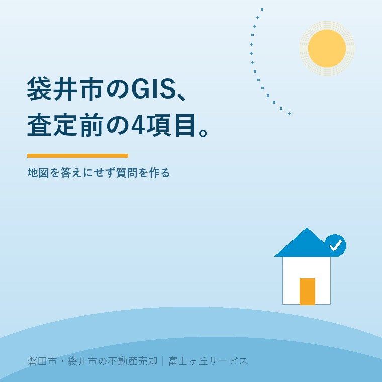

2026年9月3日｜カテゴリ：袋井市／不動産GIS／査定

この記事の要点
Q. 袋井市の実家を査定に出す前に、市のGISで何を見ればよいですか。
A. ①用途地域、②道路台帳、③上水道管、④下水道管を確認し、画面を保存します。4項目は同じ公式GISから見られますが、別カテゴリの画面です。表示は境界や接続を確定する資料ではないため、現地と市の担当窓口で再確認します。
磐田市・袋井市・森町では、公開情報を査定条件へ翻訳できる地域密着の不動産会社へ相談する選択肢があります。
袋井市の実家を売る前に、「査定額の根拠を自分でも見たい」と思う持ち主の方は、市の地図から始められます。営業担当者の説明を全部信じるか、全部疑うか。その二択にする必要はありません。
袋井市は2026年4月1日に、地図情報配信サービス「どまんなか袋井navi」の案内を更新しました。都市計画、道路、上下水道などを同じ公式GISから調べられます。ただし、一枚の画面へ全部が重なる仕組みではなく、カテゴリを切り替えて確認します。
袋井市の不動産GISで最初に見る項目は、都市計画情報マップの用途地域です。都市計画道路も同じカテゴリに掲載されています。
用途地域は、地域ごとの建物用途や建て方を考える入口です。住宅地に見えても、低層住宅中心の区域と店舗等が混ざる区域では、買主が想定する使い方が変わります。都市計画道路の予定線が近ければ、別の確認も要ります。
ただし、画面に色が付いていることと、その実家を同じ形で建て直せることは別です。接道、道路種別、建ぺい率、容積率、高さ、地区計画などを合わせて見ます。
同じ市内でも条件が変わる実例は、磐田市を題材にした同じ磐田でも建てられる家は違うで説明しています。袋井市でも、色だけで結論を出さない考え方は同じです。
袋井市の不動産GISで2番目に見る項目は、道路情報マップの路線網図と道路台帳です。査定では、敷地がどの道へ接しているかを考える材料になります。
道路の表示を見たら、画面を保存し、「この道は市が管理する路線か」「台帳幅員と現地の有効幅は同じか」「建築基準法上の扱いは何か」と不動産会社へ聞きます。GISに線があるだけで、再建築の可否まで確定しません。
道路は、査定額より前に見ます。同じ面積の土地でも、車が入れるか、建替えに必要な接道を満たすか、セットバックの可能性があるかで、買主の範囲は変わります。
市街化調整区域では、道路だけでなく建築できる根拠も別に確認します。市街化調整区域の実家は売れるのかで、売れないと決め付ける前の順をまとめました。
袋井市の不動産GISで3番目に見る項目は、上下水道情報の上水道管網図です。公式案内では、弁栓と管が掲載対象です。
前面道路に上水道管が表示されても、その土地へ引込管があるか、口径が今の利用に足りるかまでは別確認です。現地の水道メーター、止水栓、古い工事書類と照合します。
査定時には「前面道路の管」「宅内への引込」「メーター」の三つを分けて聞きます。古家付き土地で解体後に売る場合も、引込位置が買主の建築計画と合うとは限りません。
袋井市の不動産GISで4番目に見る項目は、下水道管網図です。公式案内では、升、マンホール、取付管、管渠と、下水道の事業計画が掲載されています。
下水道管が道路に表示されても、宅内の排水がその管へ接続済みとは限りません。公共ますの有無、浄化槽の利用、取付管の位置を現地と担当窓口で確かめます。
上水道と下水道を一つの欄へ「あり」と書く査定表は、少し粗い。引込工事や接続工事が必要なら、買主が見込む費用に響くからです。画面は、工事費を断定する資料ではなく、確認先を絞る資料です。
袋井市の公式GISの良い点は、所有者と不動産会社が同じ公開画面を見ながら、用途、道路、上下水道の話を始められることです。査定書の用語が、説明なしの記号で終わりにくくなります。
その上で、注文したい点があります。用途、道路、上下水道は別カテゴリです。「一画面で全部分かる」と受け取ると、レイヤーの見落としが起きます。保存した画像には、地図名、表示項目、確認日を一緒に残す方が安全です。
公式GISの利用条件にも、地図や画像は土地境界や建物位置を正確に示すものではなく、作成時期によって現状を反映しない場合があると書かれています。境界を調べる入口は公図を無料で見る方法へ分けます。
私はこう考えます。GISは査定を自動化する答えではなく、査定で聞く質問を増やす道具です。私も日々の仕事で地図やAIを使うので、デジタル化には前向きです。ただ、画面へ住所を入れたら価格まで正しいと思う使い方には釘を刺します。最後に責任を持つのは人です。
ここは私も迷います。公開情報を細かく見せれば、所有者の安心は増えます。一方、確認前の線や色まで説明すると、仮の情報が確定事項として残ります。これは体験ストックにある特定案件ではなく、宅地建物取引士としての私の意見です。
袋井市の不動産査定前に行う作業は、同じ場所を用途地域、道路台帳、上水道管、下水道管の各画面で開き、4枚保存することです。
| 保存する画面 | 査定で聞く一問 |
|---|---|
| 用途地域・都市計画道路 | 建替えと利用に、ほかの制限はあるか |
| 路線網図・道路台帳 | 接する道路の種別と現地幅は何か |
| 上水道管網図 | 引込管とメーターは確認できるか |
| 下水道管網図 | 公共ます、取付管、接続状況はどうか |
袋井市と磐田市の都市計画の更新時期を見るなら、磐田市・袋井市の都市計画マスタープランも確認できます。計画の話と、一つの土地の法的条件は分けて扱います。
今日できる確認は、4画面を保存して、分からない箇所へ赤丸を付けることです。査定依頼時にその4枚を送り、現地と市の窓口で確定する項目を不動産会社から返してもらいます。
GISだけでは査定額を計算できません。用途地域、道路、上下水道は価格を考える材料ですが、成約事例、土地形状、接道状況、建物状態、境界、災害リスクなども確認します。GISの役割は答えを出すことではなく、不動産会社へ「この道路幅は現地と合うか」「引込管はあるか」と聞く質問を作ることです。
用途地域の表示だけでは、同じ建物を建て直せると判断できません。接道、道路種別、建ぺい率・容積率、高さ、地区計画、敷地形状など別の条件が関わります。表示位置が境目に近い場合も、画面の色だけで確定しないでください。具体的な建築計画は袋井市の担当窓口や建築士へ確認をお願いします。
前面道路の管が表示されても、宅内への引込管や公共ますが設置済みとは限りません。管の位置、口径、取付管、ますの有無と、現地のメーターやふたを照合します。利用可否、工事負担、加入金等は画面だけで断定せず、物件位置と利用計画を袋井市の上下水道担当窓口へ伝えて確認してください。

この記事を書いた人：大石浩之（宅地建物取引士）
大石浩之（磐田市／不動産業）。磐田市・袋井市・森町の公開地図を、道路、上下水道、建築条件と現地へつなぎ、売主が根拠を確認できる査定を案内しています。プロフィール
袋井市の実家・空き家の公開情報確認
GISの4画面を、査定の質問へ変える
用途、道路、上下水道を確認し、現地と窓口で確定する項目を分けます。売るかどうかは、材料を見てから決められます。
本記事は2026年9月3日時点の袋井市公表情報に基づく一般的な説明です。GISの表示は現況や土地境界、建物位置との完全な一致を保証するものではありません。都市計画と道路は袋井市の担当窓口や建築士へ、上下水道の利用可否と費用は上下水道担当窓口へ、契約条件は宅地建物取引士や弁護士へ、税務・登記・相続の個別判断は各専門家に確認をお願いします。
富士ヶ丘サービス株式会社／静岡県磐田市見付5789番地1／TEL:0538-31-3308／静岡県知事 (2) 第14083号／代表取締役・宅地建物取引士 大石 浩之